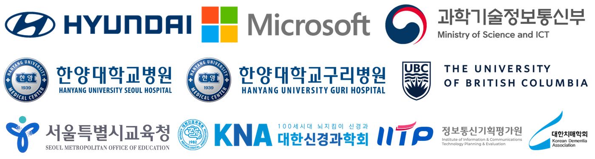

Research Area
- Home
- About
- Research Area
›HAI Lab Overview
HAI Lab은 AI 학습 및 추론 기술, Human-Computer Interaction(HCI), AR/VR 기술을 융합하여 인간과 AI가 협력하는 Human–AI Partnership 연구를 수행합니다. 멀티모달 데이터를 기반으로 인지·감정·행동을 이해하는 지능형 AI를 개발하고, 이를 Human-centered AI로 확장하여 실제 산업 현장에서 활용 가능한 AI Transformation으로 연결하는 것을 목표로 합니다.
HAI Lab studies Human–AI Partnership by combining machine learning, human-computer interaction, and AR/VR. We build multimodal AI that understands cognition, emotion, and behavior, extend it into human-centered AI, and validate it as AI transformation in the field.
›Research Areas
Multimodal Intelligence
텍스트, 이미지, 음성, 생체신호 등 다양한 멀티모달 데이터를 통합적으로 학습·추론하여 인지·감정·행동을 이해하는 AI 기반 멀티모달 지능 모델을 연구합니다.
Human-centered AI
Agentic AI, 설명 가능한 AI(XAI), Human-in-the-loop 기술을 기반으로, 인간의 의사결정을 보조하고 역량을 증강하는 Human-centered AI 시스템을 설계합니다.
AI Transformation in Practice
의료, 교육, 제조, 금융 등 실제 산업 현장을 대상으로 사용자 중심의 AI 기술을 적용하고, AI 도입을 통한 실질적인 AX(AI Transformation) 효과를 검증·실증합니다.
›Application Domains
- Healthcare대한신경과학회 · 대한치매학회 · 한양대병원
- EducationMicrosoft · 서울시교육청
- Manufacturing현대자동차
›Collaborators
